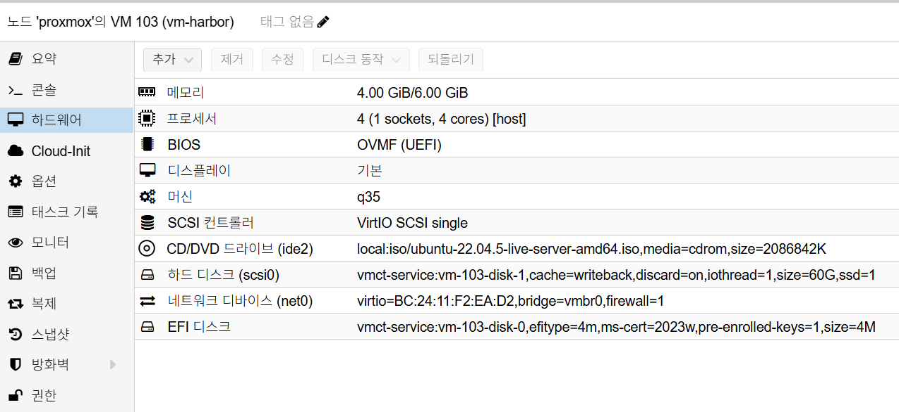

Harbor Installation
개요
이 문서는 VM 기반 Harbor 기본 설치 절차를 정의합니다.
설치가 가장 중요한 기준 문서이므로, 구축 직후 필요한 검증, 초기 스냅샷, 기본 운영 기준, MinIO S3 backend 연동, Keycloak OIDC 준비, 자주 발생하는 이슈까지 이 문서에 포함합니다.
사전 조건
- OS: Ubuntu 22.04 LTS
- VM 리소스: 최소
4 vCPU / 4GB RAM - 디스크: OS
60GB이상 - Harbor 버전:
v2.13.2 - 배치: VM 설치 (Kubernetes 배치 금지)
- 도메인:
harbor.semtl.synology.me - Reverse Proxy 경유 노출
Proxmox VM H/W 참고 이미지
아래 이미지는 Proxmox Hardware 탭 기준의 Harbor VM 구성 예시입니다.

캡션: 4 vCPU, 4GB ~ 6GB RAM, q35, OVMF (UEFI), OS Disk 60GB, vmbr0
네트워크 기준
net0단일 NIC 사용 (192.168.0.x)- 예시 VM IP:
192.168.0.173
설치 절차
1. Docker / Compose 설치
# Docker 설치
curl -fsSL https://get.docker.com | sh
# Docker 서비스 자동 시작 활성화
sudo systemctl enable --now docker
# compose plugin 설치
sudo apt update
sudo apt install -y docker-compose-plugin
# Docker 서비스 상태 확인
sudo systemctl status docker --no-pager
2. Harbor 오프라인 패키지 준비
# 작업 디렉터리 이동
cd ~
# Harbor 오프라인 설치 번들 다운로드(고정 버전)
curl -fLO "https://github.com/goharbor/harbor/releases/download/v2.13.2/harbor-offline-installer-v2.13.2.tgz"
# 다운로드 파일 확인
ls -lh harbor-offline-installer-v2.13.2.tgz
# 압축 해제
tar -xzf harbor-offline-installer-v2.13.2.tgz
3. harbor.yml 설정
# Harbor 설정 파일 생성
cd ~/harbor
cp harbor.yml.tmpl harbor.yml
# 설정 파일 편집
sudo editor harbor.yml
핵심 항목:
hostname: harbor.semtl.synology.mehttp: port: 80harbor_admin_password: <초기 관리자 비밀번호>- HTTPS 인증서는 Reverse Proxy에서 종료하므로 Harbor VM에서는
https:블록 비활성 또는 미사용 - 내부 저장소는 초기 설치 기준으로 기본 filesystem 사용
4. Harbor 설치 실행
# 기본(권장): sudo 일관 실행
cd ~/harbor
sudo ./prepare
sudo ./install.sh
5. 재부팅 자동 기동 보장
Docker 자동 기동만으로 Harbor가 항상 올라오지 않는 경우가 있어, 부팅 시 Harbor compose를 강제로 올리는 유닛을 등록합니다.
sudo tee /etc/systemd/system/harbor.service >/dev/null <<'SERVICE'
[Unit]
Description=Harbor Container Service
After=docker.service network-online.target
Requires=docker.service
Wants=network-online.target
[Service]
Type=oneshot
WorkingDirectory=/home/semtl/harbor
ExecStart=/usr/bin/docker compose up -d
ExecStop=/usr/bin/docker compose down
RemainAfterExit=yes
TimeoutStartSec=0
[Install]
WantedBy=multi-user.target
SERVICE
sudo systemctl daemon-reload
sudo systemctl enable --now harbor.service
sudo systemctl status harbor.service --no-pager
서비스를 등록하지 않은 상태에서 재부팅 후 컨테이너가 Exited (128)로 내려가면
아래 명령으로 즉시 복구합니다.
cd ~/harbor
sudo docker compose down
sudo docker compose up -d
sudo docker ps -a
방화벽 / 포트 체크
- VM 내부 포트:
80,443 - Reverse Proxy 연결 경로 기준으로 외부 접근은
https://harbor.semtl.synology.me만 사용
설치 검증
# Harbor 컨테이너 상태
sudo docker ps
# 외부 URL 응답 확인
curl -I https://harbor.semtl.synology.me
# 컨테이너 이미지 태그 확인
sudo docker ps --format '{{.Image}}' | grep goharbor
# 재부팅 후 자동 기동 확인
sudo reboot
# 재접속 후:
sudo systemctl is-enabled docker
sudo systemctl is-enabled harbor.service
sudo systemctl status harbor.service --no-pager
sudo docker ps | grep -E 'harbor-core|harbor-portal|harbor-jobservice'
검증 기준:
- 로그인 페이지 응답
- 이미지 프로젝트 생성 가능
- Harbor 컨테이너 이미지 태그가
v2.13.2로 확인됨 - 재부팅 후
harbor.service와 주요 컨테이너가 정상 기동
초기 스냅샷
스냅샷은 반드시 불필요 파일 정리 후 생성합니다.
1. 불필요 파일 정리
# /tmp 전체 삭제
sudo rm -rf /tmp/*
# /var/tmp 전체 삭제
sudo rm -rf /var/tmp/*
# 미사용 패키지 정리
sudo apt autoremove -y
# APT 캐시 정리
sudo apt clean
# journal 로그 전체 정리
sudo journalctl --vacuum-time=1s
# 현재 사용자 bash 히스토리 비우기
cat /dev/null > ~/.bash_history && history -c
2. Proxmox 스냅샷 생성
- 관리자 비밀번호 변경 후 생성
- Robot account 생성 전 생성
- OIDC 연동 전 생성
- Proxmox에서 Harbor VM 선택
Snapshots > Take Snapshot실행- 이름 예시:
harbor-install-clean-v1 - 설명 예시:
text
[설치]
- harbor : v2.13.2
- hostname : harbor.semtl.synology.me
- reverse proxy : synology(443) -> harbor vm(80)
- id : admin
- pw : <change-required>
Include RAM은 비활성화 권장
설치 직후 운영 기준
- Harbor URL:
https://harbor.semtl.synology.me - Storage backend는 MinIO S3(
harborbucket) 사용 - 인증은 기본 계정에서 단계적으로 Keycloak OIDC로 전환
- GitLab Container Registry는 비활성 정책이며 이미지 저장소는 Harbor로 통일
일일 점검
# Harbor UI/API 접속 가능 여부 점검
curl -I https://harbor.semtl.synology.me
확인 항목:
- UI 로그인 정상
- 이미지 pull/push 실패 급증 여부
주간 점검
- MinIO backend 연결 상태 확인
- Robot account 만료 및 권한 점검
- 미사용 이미지 및 아티팩트 정리 정책 점검
MinIO S3 backend 연동
연동 사전 조건
- Harbor 기본 설치 완료
- MinIO 설치 및 동작 확인 완료
- MinIO endpoint:
http://192.168.0.171:9000 - MinIO bucket
harbor및 Access/Secret Key 준비
1. Harbor 설정 파일 백업
cd ~/harbor
cp harbor.yml harbor.yml.bak.$(date -u +%Y%m%d%H%M%S)
2. harbor.yml에 S3 backend 반영
storage_service를 아래처럼 설정합니다.
storage_service:
s3:
regionendpoint: http://192.168.0.171:9000
accesskey: harbor
secretkey: <minio-secret>
bucket: harbor
secure: false
v4auth: true
chunksize: 5242880
rootdirectory: /
storageclass: STANDARD
3. Harbor 재적용
cd ~/harbor
sudo ./prepare
sudo docker compose down
sudo docker compose up -d
검증
# Harbor 컨테이너 상태 확인
sudo docker ps
# Harbor 접속 확인
curl -I https://harbor.semtl.synology.me
검증 기준:
- Harbor 로그인 및 프로젝트 접근 정상
- 이미지 push/pull 동작 정상
- MinIO bucket
harbor에 오브젝트 생성 확인
롤백
cd ~/harbor
cp harbor.yml.bak.<timestamp> harbor.yml
sudo ./prepare
sudo docker compose down
sudo docker compose up -d
Keycloak OIDC 연동 준비
대상 환경
- Harbor:
https://harbor.semtl.synology.me - Keycloak:
https://auth.semtl.synology.me - Realm:
semtl - TLS 종료: Synology Reverse Proxy
1. 사전 점검
- Harbor 외부 URL이 HTTPS 기준으로 고정되어야 합니다.
hostname: harbor.semtl.synology.meexternal_url: https://harbor.semtl.synology.me(지원되는 배포 방식에서 사용)- Reverse Proxy가
X-Forwarded-Proto: https와Host헤더를 전달해야 합니다. - 비상 복구용 로컬 관리자 로그인 경로를 유지합니다.
Primary Auth Mode를 활성화해 OIDC 장애 시 로컬 로그인 가능 상태 유지
2. Keycloak Client 생성
Realm(semtl) -> Clients -> Create client
권장 설정:
- Client type:
OpenID Connect - Client ID:
harbor - Client authentication:
ON(Confidential) - Standard flow:
ON - Authorization:
OFF - Direct access grants / Implicit flow / Service account roles:
OFF
Login settings:
- Valid Redirect URIs:
https://harbor.semtl.synology.me/c/oidc/callback- Valid Post Logout Redirect URIs:
https://harbor.semtl.synology.me/account/sign-in- Web origins:
+또는https://harbor.semtl.synology.me
저장 후 Credentials 탭에서 Client Secret을 확인합니다.
3. Keycloak Group Claim 구성
Harbor 그룹 매핑을 위해 groups claim을 토큰에 포함합니다.
예시 절차:
Clients -> harbor -> Client scopes- Harbor 전용 scope에 mapper 추가
- Mapper type:
Group Membership - Token claim name:
groups Add to ID token:ONFull group path:OFF
권장 그룹 구조:
harbor-adminsharbor-devops-adminharbor-devops-devharbor-devops-ro
4. Harbor OIDC 설정
Harbor UI -> Administration -> Configuration -> Authentication
입력값:
- Auth Mode:
OIDC - OIDC Provider Name:
keycloak - OIDC Endpoint:
https://auth.semtl.synology.me/realms/semtl - OIDC Client ID:
harbor - OIDC Client Secret:
<keycloak-client-secret> - OIDC Scope:
openid,profile,email - Username Claim:
preferred_username - Group Claim Name:
groups - OIDC Admin Group:
harbor-admins - Verify Certificate:
ON - Automatic onboarding:
ON - Primary Auth Mode:
ON
5. 프로젝트 권한 매핑
Projects -> devops -> Members -> + GROUP
권장 매핑:
harbor-devops-admin->Project Adminharbor-devops-dev->Developerharbor-devops-ro->Guest또는Limited Guest
참고:
- 그룹 매핑 목록은 최신 OIDC 토큰 기준으로 반영되므로, Keycloak 그룹 변경 후 재로그인이 필요합니다.
6. Robot Account 운영
OIDC 사용자 대신 CI/CD는 Robot Account를 사용합니다.
권장:
gitlab로봇 계정:push + pulljenkins로봇 계정:pull-only또는push + pull- 토큰 만료 주기와 교체 절차를 운영 문서로 고정
7. 검증 시나리오
- Harbor 접속 시 Keycloak 로그인 페이지 리다이렉트 확인
- OIDC 로그인 성공 후 Harbor 복귀 확인
harbor-admins사용자의 System Admin 권한 확인- devops 프로젝트에서 그룹 권한 검증
- Robot Account로
docker login및 push/pull 검증
자주 발생하는 이슈
1. 서비스 시작 실패
증상:
- 프로세스가 재시작 반복
주요 원인:
- 설정 오류
- 포트 충돌
조치:
- 설정 검증 후 재시작
2. 접속 불가
증상:
- UI 또는 API 타임아웃
주요 원인:
- 네트워크, DNS, 방화벽 설정 이슈
조치:
- 경로별 네트워크 확인 후 정책 수정
3. OIDC 로그인 후 redirect loop 또는 redirect_uri 오류
증상:
- Keycloak 로그인 후 Harbor로 복귀 실패
- 반복 로그인 발생
주요 원인:
- Keycloak Redirect URI 미일치
- Harbor 외부 URL이 HTTPS로 인식되지 않음
- Reverse Proxy
X-Forwarded-Proto전달 누락
조치:
- Keycloak Client Redirect URI 확인
https://harbor.semtl.synology.me/c/oidc/callback- Post Logout Redirect URI 확인
https://harbor.semtl.synology.me/account/sign-in- Harbor
hostname,external_url, Reverse Proxy 헤더 설정 점검
4. 프로젝트 + GROUP에서 Keycloak 그룹이 검색되지 않음
증상:
- Harbor Members 화면에서 그룹 자동완성 미노출
주요 원인:
- Keycloak 토큰에
groupsclaim이 없음 - 그룹 변경 후 사용자 재로그인 미수행
- Mapper 설정 누락 또는 오설정
조치:
- Keycloak mapper 점검
- Claim name:
groups - Add to ID token:
ON - Full group path:
OFF - 그룹 부여 후 Harbor와 Keycloak 재로그인
- Harbor Authentication 설정의
Group Claim Name=groups확인
에스컬레이션 기준
- 15분 이상 서비스 영향 지속
- 데이터 손실 가능성 존재
보안 주의사항
- Harbor 관리자 계정을 공유하지 않습니다.
- Robot account를 사람 계정처럼 장기 사용하지 않습니다.
- OIDC 설정 변경 후 로그인 검증 없이 운영 반영하지 않습니다.